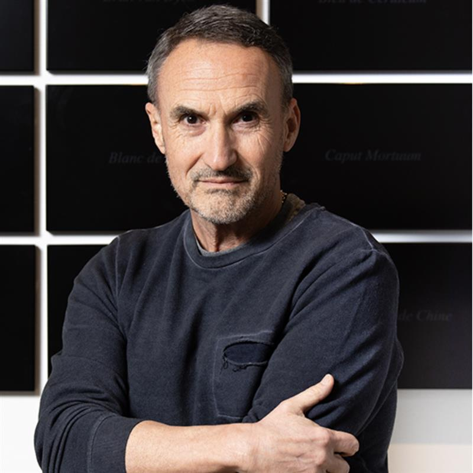
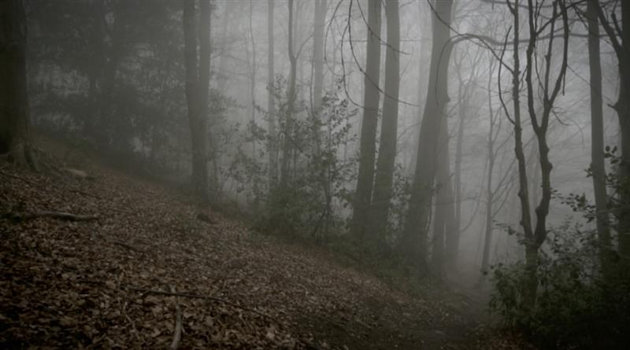
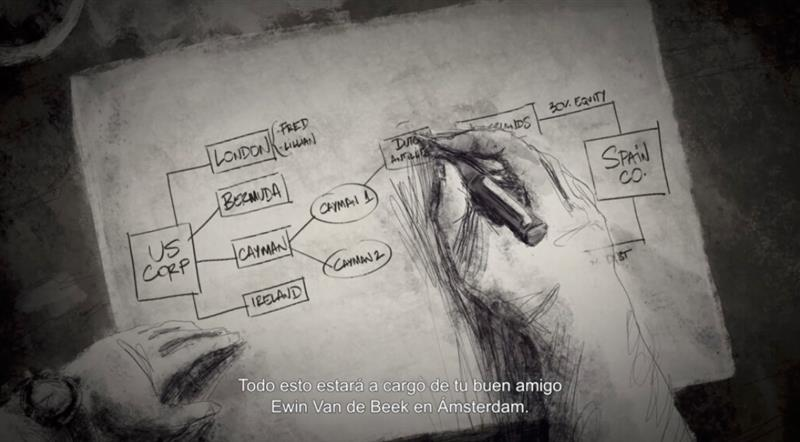
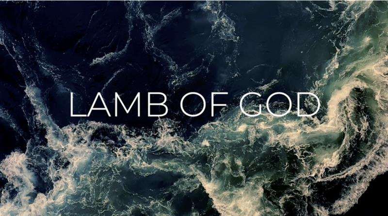

ON SOURCE: Fundació Miró Mallorca
Max de Esteban. “Extinction”
18 September 2024 — 23 March 2025
The exhibition, curated by Antònia Maria Perelló, reflects on the human condition, technology and the society generated by post-capitalism in the 21st century. Its launch willl start with an enriching and blatant conversation between the visual artist Max de Esteban and the philosopher Josep Ramoneda. All together to shock the viewer and make us reflect on the changes that humanity will have to face from from now on.
ON ED: Here at the Olive Network we are proud to say that Max de Esteban is a friend. This is a trailer for A Forest which is currently screening at the Fundació Miró Mallorca
Open on original site ↗Max de Esteban: The idea is that we are living a period of transition where either the world as we know it dies out and something new and very different emerges, or it is our own species that will die out. It is not a moral judgment but an observation.
“Extinction” presents five of the latest works by the artist Max de Esteban, centered on a research project on the infrastructures of contemporary capitalism. The works projected are: “7 minutes” (2022), “A Forest”(2019), “20 Red Lights”(2018), “Black Book” (2021) y “Lamb of God” (2024). Current topics such as genetic manipulation, the world economy or Artificial Intelligence (AI) are addressed.
The inaugural event opens with a dialogue between the artist Max de Esteban and the philosopher Josep Ramoneda, creator and director of the CCCB, Center for Contemporary Culture in Barcelona, and current director of the European School of Humanities. An enriching conversation and of a high intellectual level, where we will talk about Artificial Intelligence (AI), genetic manipulation, capital gains, real estate speculation and many other topics that affect us all and that are currently at the epicenter of a global debate.

Max de Esteban is an artist working mostly in photography and video whose work is best known for his examination of the human condition under a technological regime. His projects have been exhibited at museums and institutions such as Jeu de Paume in Paris, MUAC in Mexico, NRW-Forum in Dusseldorf, Museum of Fine Arts in Houston, Deutsche Technik Museum in Berlin, Virreina Centre de l’Imatge in Barcelona, CGAC in Santiago de Compostela and Palais de Tokyo in Paris.
Max participated in the XVI Cuenca Biennial (2023); Yokohama Triennale (2020); XIII Cairo Biennial (2019); XIII Bienal de la Habana (2019); XVI Fotofest Biennial (2016) and Darmstädter TdF Triennial (2014). His work has been the subject of five monographs: Estética de la Extinción (Turner); Twenty Red Lights (Virreina/La Fábrica); Propositions (La Fábrica); Heads will Roll (Hatje Cantz) and Elegies of Manumission (Nazraeli Press) and is part of museums’ collections such as Museum of Fine Arts Houston, Staatliche Museen zu Berlin, Museum Kunstpalast Düsseldorf, Deutsche Technik Museum in Berlin, CGAC in Santiago de Compostela, Wifredo Lam in La Habana and MACBA in Barcelona.
Max is a Fulbright alumnus and received a PhD in Economics and Business from Universitat Ramon Lull, an MBA from Stanford University and a MSc and BSc in Engineering from Universitat Politecnica de Catalunya.
“7 MINUTES” (2022)
Synopsis
A work of art interpellates us, its audience, making a confession. The museum has installed detectors that measure the time and attention that each of the works generates. This is a score: only the most attractive to the audience will continue to be exposed to the public. The rest return to the warehouse or, even worse, are removed from the collection. The maximum score is achieved with seven minutes. The piece thus keeps us in front of it for exactly that, seven minutes.

“A FOREST” (2019)
Synopsis
A monologue where we hear the CEO of one of the leading venture capital firms investing in artificial intelligence start-ups questions the nature of reality: are the images real? Is the voice real? But the key questions that are really addressed are: What is the ideology behind the main investors in this technology? What are the social values at stake? What are the political implications?
“20 RED LIGHTS” (2018)
Synopsis
The video consists of written interviews with four Wall Street executives. The discourse of these investors refers to meritocracy and self-realization, the benefits of financial deregulation, the social value of financial intermediation and inequality. The executives’ arguments are, from a particular logic, irrefutable. When we enter the universe of his language game, everything makes sense. The interviewees are ideological products and at the same time sophisticated reproducers of ideology.

“BLACK BOOK” (2021)
Synopsis
“Black Book” reveals the concepts, language and concerns of corporate tax law professionals, the simplicity of legal structures for tax evasion and the enthusiastic complicity of governments. It is structured following the eight chapters of “Une Saison a Enfer” by Rimbaud, from “Mauvais Sang” to “Adieu”. It is perhaps his most enigmatic work and in which he most directly addresses despair and fall, alienation and his conflicting relationship with his personality and past.

“LAMB OF GOD” (2024)
Synopsis
In “Lamb of God”, a scientist explains in informative language the enormous risks posed by certain uses of genetic engineering, which can compromise both our reality and that of future generations. In addition, it raises a very deep ethical debate about the unpredictable consequences of this technology. What would happen if through human intervention we caused the emergence of consciousness in animal species?
Contact
Communication and Marketing
Fundació Miró Mallorca
Carrer de Saridakis, 29
07015 Palma
Tel. +34 971 70 14 20
[email protected]
ON SOURCE: Fundació Miró Mallorca